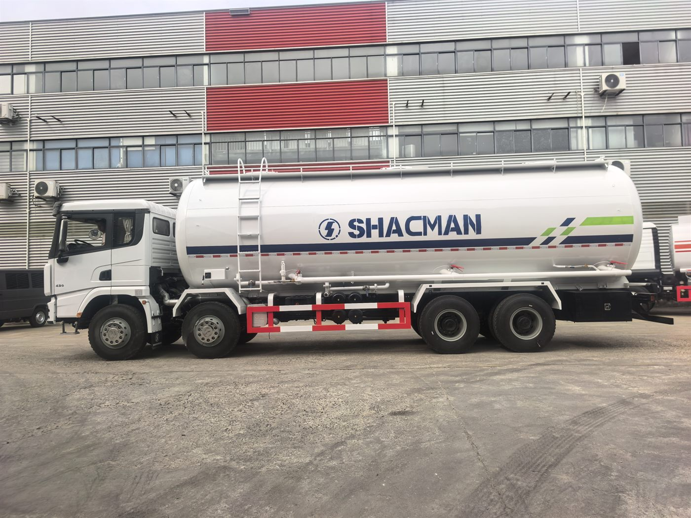

Direct answer: This guide is for overseas buyers evaluating the SHACMAN X3000 8x4 bulk cement truck for Nigeria. The photo, title and article all refer to the same vehicle type, and final specifications should be confirmed according to the order.
Why dry powder buyers need a detailed enquiry
Bulk cement trucks are highly dependent on cargo density, tank volume, compressor equipment and unloading distance. Nigerian buyers moving cement, fly ash or similar dry powder should confirm the material before asking for final price.
Tank and unloading equipment
The pictured vehicle is a SHACMAN bulk cement truck reference. For an order, confirm tank volume, compartment design, compressor, air pipeline, unloading hose, discharge height and local road limits.
Buyer questions for Nigeria
Tell Andy whether the truck works between port, cement plant, depot or construction site. Include road distance, daily trips, loading method and whether the operation needs fast unloading or longer transfer distance.
Avoiding wrong configuration
A standard tanker quotation can be misleading when the powder type changes. Always confirm cargo, volume, legal load, discharge equipment and maintenance support before signing the purchase order.
- destination country, port and quantity;
- cargo or jobsite use, road condition and daily work cycle;
- target payload, body or tank volume, and local registration limits;
- preferred delivery term, inspection request and spare-parts needs.
Frequently asked questions
Is this truck for liquid cargo?
No. It is for dry powder cargo such as cement or fly ash, not liquid fuel or water.
Can 6x4 and 8x4 versions be discussed?
Yes. The correct chassis depends on payload, road rules and transport distance.
What is needed for a Nigeria quote?
Send cargo, target volume, destination port, unloading distance, route condition and quantity.
Related product page: SHACMAN X3000 8x4 bulk cement truck. For price and configuration, use the RFQ form or WhatsApp.
Request a configuration quotation
Andy can help compare configuration, shipping and inspection details for your market.